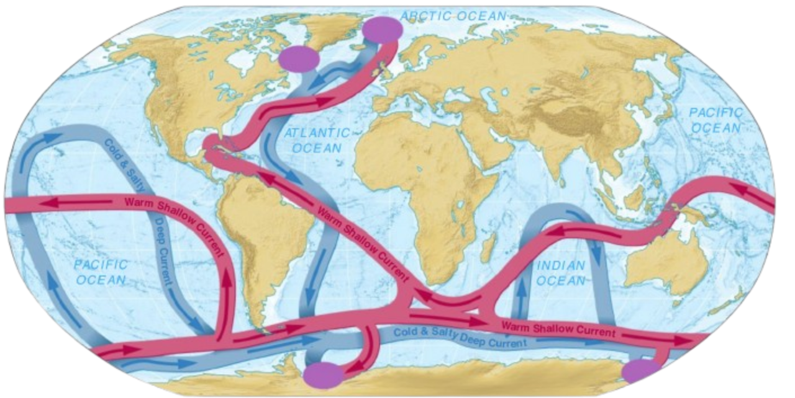
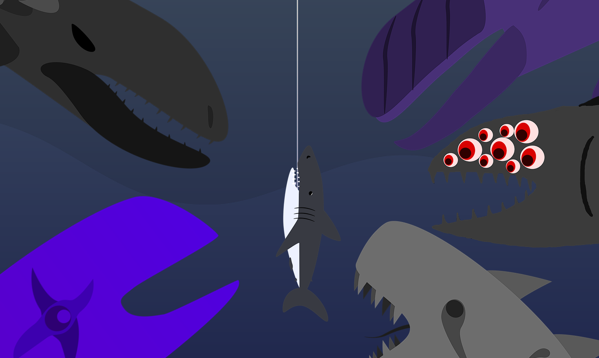

Lecture 11 – Ocean Mixing and Overturning Circulation
Conveyor-Belt Circulation
Because the overall circulation pattern resembles a large conveyer belt, the model is called conveyer-belt circulation. Beginning in the North Atlantic, surface water carries heat to high latitudes via the Gulf Stream. During the cold winter months, this heat is transferred to the overlying atmosphere, warming northern Europe. An integrated model combining deep thermohaline circulation and surface currents is shown in the figure below. (Idealized conveyer-belt circulation.
Schematic map of conveyer-belt circulation of the world ocean. Source areas (purple dots) exist in high-latitude regions where surface water cools and becomes high density. These source areas feed the flow of deep, high density waters (blue lines), which flow into all of the oceans. This water slowly ascends throughout the oceans and completes the conveyer by returning to the source areas as warm surface currents (red lines).
Credit: Essentials of Oceanography, Trujillo and Thurman.)
Bonus: Cat Goes Fishing
Cat Goes Fishing on Steam Abyssal, huge fish surrounding a shark on the hook. Next: Lecture 12 – Stability of the Atlantic Meridional Overturning Circulation